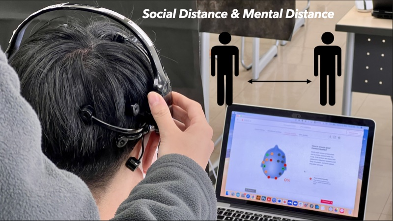

Psychological distance and user engagement in online exhibitions: Visualization of moiré patterns based on electroencephalography signals
Frontiers in Psychology, 2022

Abstract
The COVID-19 pandemic has significantly affected the exhibition of artworks in museums and galleries, and many have moved their collections online. Compared with offline exhibitions, online visitors are often unable to communicate their experience with others. Facilitating communication via Zoom, we established a system that allows two people to visit the museum together through Google Arts and Culture (GA&C). To reduce psychological distance and increase user engagement, we designed a media device based on moiré-pattern visualization of EEG signals. Forty university students were assigned to either the normal online experience (NOEE) group or the EEG signal visualization device (ESVD) group. Independent-samples t-tests showed that ESVD participants perceived a significantly closer psychological distance than NOEE participants (t = −2.699; p = 0.008). A one-way ANOVA showed that participants experienced Task 3 with significantly closer psychological distance than Task 1, 2, and 4. Repeated ANOVAs revealed that the ESVD group reported higher overall engagement with marginal significance (p = 0.056). The study shows that EEG visualization media devices can reduce psychological distance and modestly increase engagement during online exhibitions.